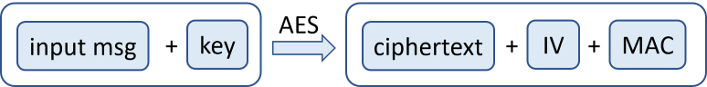
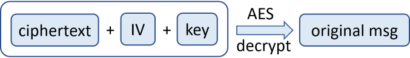
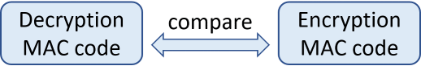

The AES Cipher - Concepts
The Advanced Encryption Standard (AES) cipher, also known as "Rijndael" is a popular, secure, widely used symmetric key block cipher algorithm, used officially as recommended encryption technology standard in the United States. AES operates using block size of 128 bits and symmetric keys of length 128, 160, 192, 224 and 256 bits.
AES is Secure and Very Popular Symmetric Encryption Algorithm
The AES symmetric encryption algorithm is considered highly secure (when configured correctly) and no significant practical attacks are known for AES in its history.
AES is used internally by the most Internet Web sites today for serving https:// content as part of the TLS (Transport Layer Security) and SSL (Secure Sockets Layer) standards for secure host to host communication on the Web.
Due to its wide use in the Internet secure communication, modern CPU hardware implements AES instructions at the microprocessor level to speed-up the AES encryption and decryption.
AES Algorithm Parameters
The AES algorithm can operate with different key lengths, but the block size is always 128 bits. For most application 128-bit AES encryption (AES-128) is enough, but for higher encryption level, it is recommended to use AES-256 (256-bit key length).
Like any other block ciphers, AES can use one of several modes of operation (CBC, ECB, CTR, …) to allow encryption of data of arbitrary length. The recommended mode for the general case and for encrypting blockchain wallets is "CTR".
Most modes of operation require an initial vector (IV). When using a counter mode (CTR), i.e. AES-128-CTR (128-bit) or AES-256-CTR (256-bit) for example, first a non-secret random salt (IV) should be generated and saved along with the encrypted ciphertext output. The size of the IV is always the same as the size of the block, i.e. 128 bits (16 bytes).
The AES encryption, combined with CTR block mode and random IV causes the encryption algorithm to produce different encrypted ciphertext each time, when the same input data is encrypted. This ensures that nobody can construct a dictionary to reverse back the encrypted ciphertext.
AES encryption in CBC mode uses a padding algorithm (like PKCS7 or ANSI X.923) to help splitting the input data into blocks of fixed block-size (e.g. 128 bits) before passing the blocks to the AES-CBC algorithm. Most developers use the CTR mode of operation for AES, so they don't need padding.
Without using a block mode, the ciphertext, generated by the AES algorithm is exactly 128 bits (16 bytes), just like the block size. The input data is also exactly 128 bits.
The ciphertext, generated by the AES-CTR algorithm (AES in CTR cipher block mode) has the same size like the size of the input data. No padding is required.
The ciphertext, generated by the AES-CBC algorithm (AES in CBC ciphertext mode), has size of 128 bits (16 bytes) or multiple of 128 bits. The input data should be padded before encryption and unpadded after decryption.
The AES algorithm often is used along with a password-to-key derivation function, e.g. Scrypt(passwd) -> key or PBKDF2(passwd) -> key.
Integrated Message Authentication Code (MAC)
The AES algorithm may use MAC (message authentication code) to check the password validity, e.g. HMAC(text, key).
The MAC code is typically integrated (see the concept of integrated encryption) in the algorithm's output. It is calculated from the input message, together with the encryption key. From the calculated MAC, it is impossible to reveal the input message or the key, so the MAC itself is not a secret. Some block cipher modes (like AES-GCM) integrate message authentication in the obtained ciphertext as part of their work, so you don't need to add MAC explicitly.
Typically MAC is calculated and used like this:
- Before the encryption, the MAC is calculated as:
mac = HMAC-SHA256(input_msg, key). - The input data is encrypted and the ciphertext is stored along with the random salt (IV) and the MAC.
- After decryption, the MAC is calculated again and is compared with the MAC stored along with the encrypted message.
- If the MAC is the same, the decryption is successful: correct ciphertext + decryption key + algorithms settings (IV, block mode, padding algorithm).
- If the MAC is different, the decryption is not successful: incorrect key / password or broken ciphertext, incorrect MAC or different algorithms settings (IV, block mode, padding, etc.)
The MAC can be calculated and verified using several approaches to integrated encryption: Encrypt-then-MAC, Encrypt-and-MAC, MAC-then-Encrypt.
The AES Encryption Process
The entire AES encryption process (password-based authenticated encryption) looks like this:
- Algorithm parameters are selected (e.g. AES, 128-bit, CTR mode + Scrypt + Scrypt parameters + MAC algorithm). These parameters can be hard-coded in the AES algorithm implementation source code or can be specified as input for the AES encrypt and decrypt. Always use the same parameters for encryption and decryption.
The encryption key is derived from the encryption password using a key-derivation function (KDF), e.g. Scrypt (with certain parameters):
The AES encryption scheme takes as input the input msg + the encryption key. It produces as output the ciphertext + the randomly generated IV (128-bit salt) + the MAC code:

- In case of authenticated encryption (e.g. AES-GCM), the MAC is already calculated automatically during the AES encryption process.
If the encryption scheme is not authenticated encryption (e.g. AER-CTR), the MAC code is not calculated automatically by the AES encryption process and should be calculated additionally. The MAC code can be calculated from the input msg, using the encryption key (or some transformation of it) and some MAC function (like HMAC-SHA-256):
The ciphertext is calculated through the AES encryption algorithm. It first generates a random salt (IV) and uses it to transform the input msg using the encryption key, through the AES cipher encryption logic:
- Finally, the encrypted output is generated. It holds the ciphertext + IV + MAC. Optionally, it holds also the algorithm settings.
The AES Decryption Process
The opposite AES decryption process (password-based authenticated decryption) looks like this:
- Initialize the same AES algorithm parameters for the decryption process, exactly like the ones used during the encryption.
Use the decryption key and the IV from the encrypted message to decrypt the ciphertext using the AES algorithm decryption logic. The output is the original message (the input msg, which was previously passed through AES encryption):

- In case of authenticated encryption (like AES-GCM), the integrated MAC code is verified during the decryption process.
- In case of unauthenticated encryption (like AES-CTR), the MAC code should be calculated and verified additionally, as it is described in the next few step.
Calculate HMAC of the original message (obtained during the decryption):
Compare the encryption MAC (the MAC of the input message, before the encryption) with the decryption MAC (the MAC of the original message, recovered by the decryption):

- If the MAC codes are the same, the decryption was correct and the original message is obtained.
- If the MAC codes are different, the decryption was failed and the original message is not the obtained one. This may happen due to many reasons, most likely "wrong password". Other reasons: incorrect ciphertext, incorrect IV, incorrect algorithm settings, incorrect KDF function or KDF parameters, etc.
Now it is time to illustrate the above described concepts through working source code to AES encrypt / decrypt an input msg by given password.